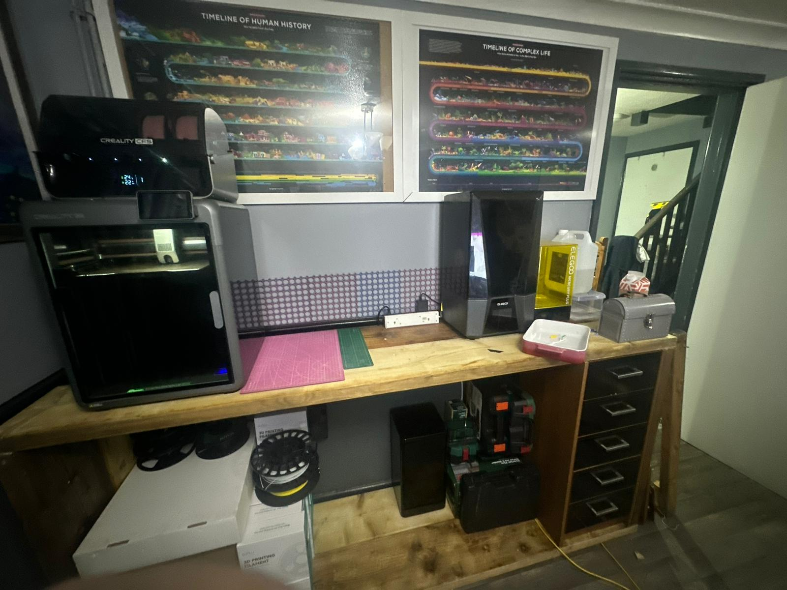

Working with what I’ve got
Despite my best efforts to construct a cabinet to hold my printers, I was actually short on lumber — I didn’t have enough 84” lengths.
So I’ve had to modify the design slightly to work with what I do have, since I need the organisation as a priority.

The quick redesign
It’s only a simple rectangle shape, but it gives me:
- an area for both printers
- a work area for post-processing
- loads more storage space for filament, resin, and random electronic bits (way too many consoles)
As you can see I managed to repurpose a set of drawers to fit under the desk, which gives me even more storage.
I’d still like to add a shelf underneath for better resin storage — but for now this gives me an area to work in.
Tools, compromises, and a cleaner finish
I’ll revisit this again when I get some more lumber and have a mitre saw to help with cutting (using a multitool is rather difficult!).
To tidy it up, I printed some basic 10 mm cylinders to plug the screw holes.
I needed to recess the screws slightly to give me enough length of screw, so the plugs helped hide that — I sanded them down flush with the bench and it looks a lot cleaner.
Now I’ve got loads more space, I’ve got lots of plans for more material testing.